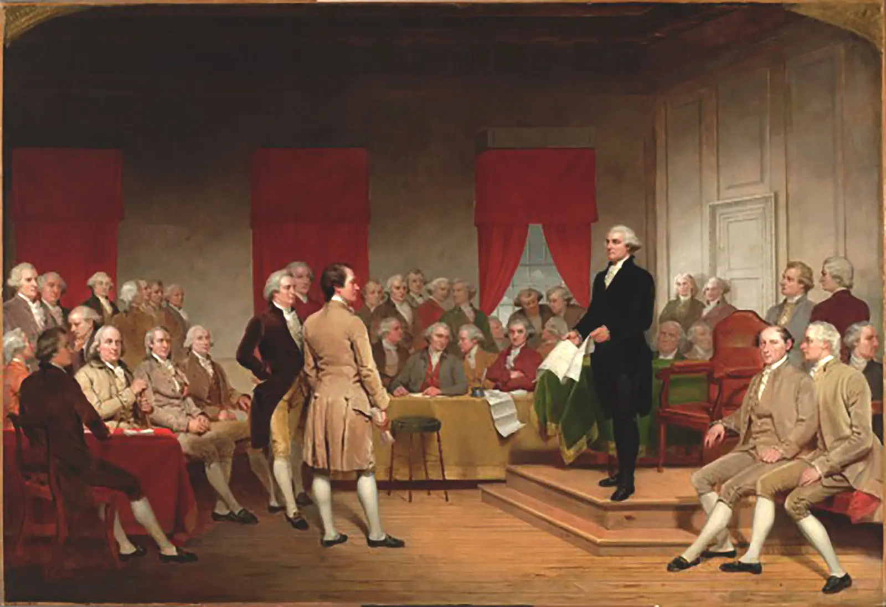
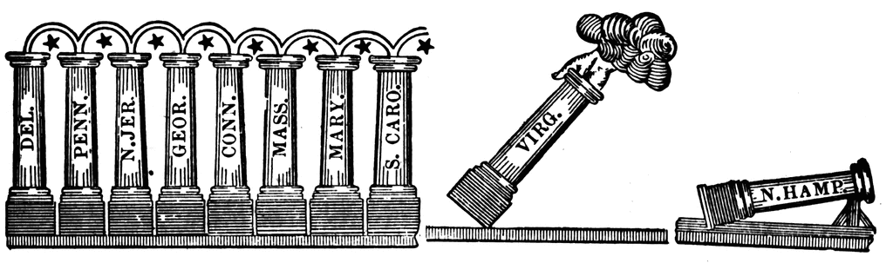
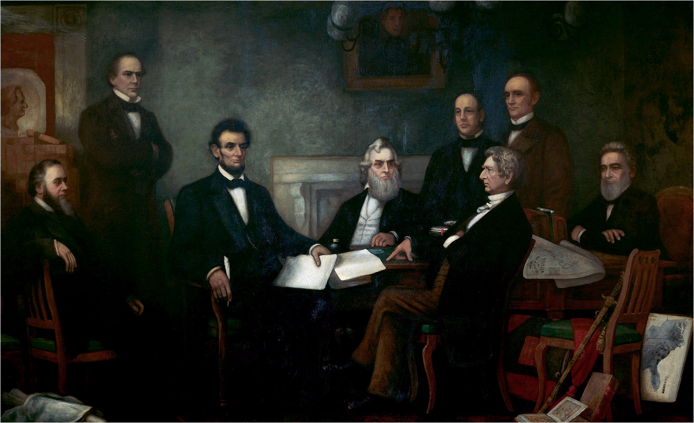
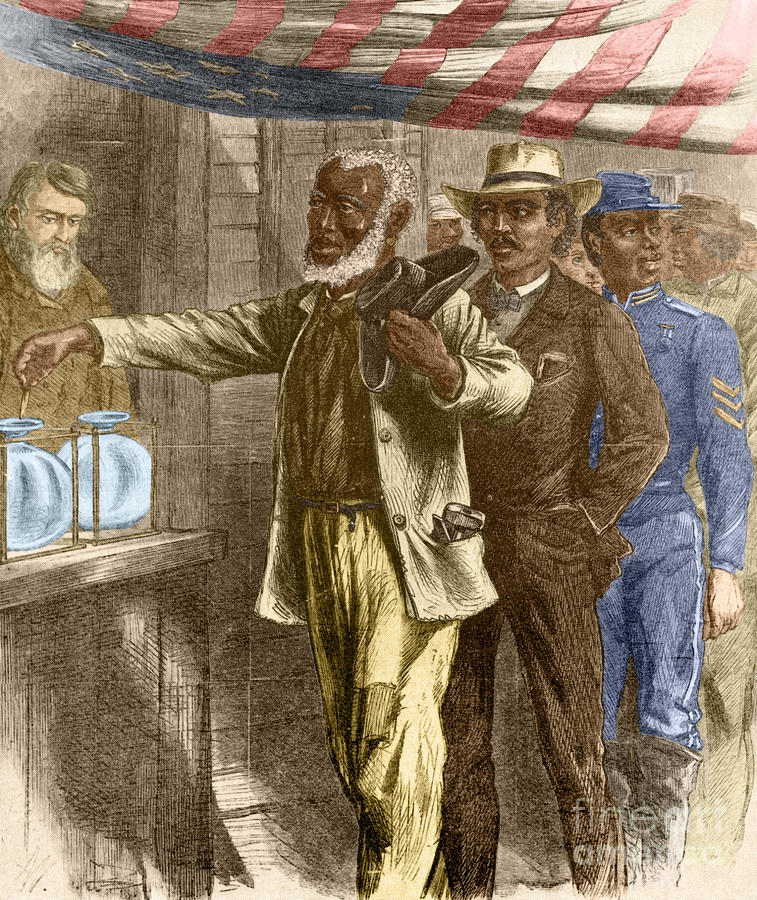
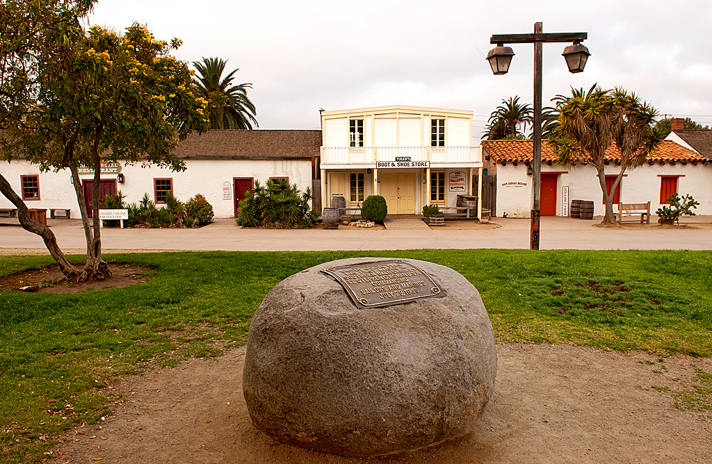

How did Enlightenment ideas shape a new kind of government, and does it still work?
❧
Philadelphia, Pennsylvania. Summer, 1787. The windows are nailed shut so no one outside can hear the arguments. Fifty-five men in wool coats are sweating through a heat wave; they are trying to build a country that has never existed before.
Philadelphia, Pennsylvania. Summer, 1787. The windows are shut tight. Fifty-five men sit in a hot room and argue about how to build a new country.
They did not agree on much. They argued about power, slavery, and who deserved a voice. But they kept going because they knew the American experiment might fail if they walked away. What came out of that locked room became the foundation of the government you live under today.
They did not agree on much. They argued about power, slavery, and rights. They kept working because the new country could fall apart. The plan they wrote still shapes your life today.
✦
CHAPTER 1: THE IDEAS THAT STARTED EVERYTHING
John Locke, English philosopher, c. 1697. His ideas about natural rights shaped Thomas Jefferson's writing. Source: Wikimedia Commons.
Before there was a Constitution, there were ideas. Many of those ideas came from European thinkers in a movement called the Enlightenment. The Enlightenment asked a dangerous question for the time: what if kings did not have the natural right to rule everyone?
Before Americans wrote the Constitution, they needed ideas. Many ideas came from the Enlightenment. These thinkers asked a risky question: what if kings did not have the right to rule everyone?
One of the most important thinkers was John Locke. Locke said every person is born with rights that no government can take away. He called them unalienable rightsRights every person is born with that no government can legally take away.; they belong to you because you are human, not because a king gives them to you.
John Locke was one of the most important thinkers. He said people are born with rights. He called them unalienable rights. These rights belong to you because you are human.
Thomas Jefferson read Locke carefully. When Jefferson wrote the Declaration of Independence in 1776, Locke's ideas were all over it. Jefferson changed Locke's word "property" to "the pursuit of happiness," but the argument stayed the same: governments exist to protect the rights of the people.
Thomas Jefferson read Locke's ideas. Jefferson used those ideas in the Declaration of Independence. He said governments should protect people's rights. If a government does not do that, people can change it.
A French thinker named Montesquieu added another idea: separation of powersThe idea that government should be split into separate parts so no one person or group controls everything.. He said government should be split into parts: one to make laws, one to carry them out, and one to judge if they are fair. The American Founders built that structure into the Constitution.
A French thinker named Montesquieu added another idea: separation of powers. He said government should have different parts. One part makes laws. One part carries them out. One part judges if they are fair.
That idea still matters when one part of government says no to another part. It keeps power from sitting in only one set of hands.
That idea still matters today. It helps stop one person or group from having all the power.

Scene at the Signing of the Constitution of the United States, painted by Howard Chandler Christy, 1940. Delegates met in Philadelphia in 1787 to write the new government's rulebook. Source: Wikimedia Commons.
DID YOU KNOW
Thomas Jefferson drafted the Declaration on a small portable writing desk that could fold up like a laptop. He kept that desk for the rest of his life.
❧
CHAPTER 2: THE DECLARATION AND THE CONSTITUTION
The Declaration of Independence, signed on July 4, 1776, was not a law. It was a breakup letter to England. It told the world why the colonies were leaving British rule. Its most famous line said that "all men are created equal," even though the country did not yet live up to those words.
The Declaration of Independence was signed on July 4, 1776. It was not a law. It was a breakup letter to England. It said the colonies were leaving British rule.
The Declaration did not explain how to run a country. That took eleven more years. In 1787, the Founders met in Philadelphia to write the Constitution, the rulebook for the new government. They had already tried a weak first plan called the Articles of Confederation, and it had failed badly.
The Declaration did not say how to run a country. That took eleven more years. In 1787, leaders met again. They wrote the Constitution, which became the government's rulebook.
First page of the U.S. Constitution, signed September 17, 1787. The words "We the People" appear at the top. Source: National Archives / Wikimedia Commons.
The Constitution fixed the problem of weak government by creating three branches and giving each branch different powers. This system is called checks and balancesA system where each branch of government can limit the power of the other branches.. If one branch tries something extreme, the other branches can stop it.
The Constitution created three branches of government. Each branch has different powers. This is called checks and balances. One branch can stop another branch from going too far.
The Constitution also divided power between the national government and the state governments. That system is called federalismA system that divides government power between the national government and the state governments.. Some powers belong to the national government, and others belong to the states.
The Constitution also splits power between the national government and the states. This is called federalism. The national government has some powers. States have other powers.
The Constitution was ratified, or officially approved, in 1788. But as soon as the ink dried, many people said it still was not enough.
The Constitution was approved in 1788. But many people still thought it needed something more.
"We hold these truths to be self-evident, that all men are created equal, that they are endowed by their Creator with certain unalienable Rights, that among these are Life, Liberty and the pursuit of Happiness."
THOMAS JEFFERSON, DECLARATION OF INDEPENDENCE, JULY 4, 1776
Jefferson is telling the king and the world that government power should come from the people, not from birth or royal command.
FAST FACTS
116DAYS IN SECRET
4PARCHMENT PAGES
27TOTAL AMENDMENTS
1OLDEST WRITTEN CHARTER
YOU DECIDE
The new Constitution is finished, but people are nervous. You can demand only one right before you agree to support it: free speech, freedom of religion, trial by jury, the right to protest, or privacy from government searches. Which one do you protect first?
✦
CHAPTER 3: THE BILL OF RIGHTS: NOT ENOUGH
James Madison, often called the Father of the Constitution and author of the Bill of Rights, c. 1821. Source: Wikimedia Commons.
When the Constitution was finished in 1787, not everyone was happy. A group called the Anti-Federalists said the Constitution gave the national government too much power. They worried that ordinary people would not be protected.
When the Constitution was done, many people were worried. They thought the national government had too much power. They wanted clear rights written down.
The Founders made a deal. If the states approved the Constitution, James Madison would write a list of rights the government could never take away. He wrote twelve amendments, and ten were approved in 1791. That list became the Bill of RightsThe first ten amendments to the Constitution, which list rights the government must protect..
The Founders made a deal. James Madison would write a list of rights. Ten of those rights were approved in 1791. They became the Bill of Rights.
Here is what those ten amendments protect, in plain language:
Here is what those ten amendments protect:
1STFreedom of speech, religion, press, and protest.
2NDThe right to own weapons.
3RDSoldiers cannot be forced into your home without permission.
4THPolice need a warrant to search your home or belongings.
5THYou do not have to testify against yourself in court.
6THYou have the right to a speedy and fair trial.
7THYou have the right to a jury trial in civil cases.
8THNo cruel or unusual punishment.
9THPeople have rights that are not listed here, too.
10THPowers not given to the federal government belong to the states.
The original Bill of Rights, 1789. Congress proposed twelve amendments; ten were ratified. Source: National Archives / Wikimedia Commons.
These ten amendments became the floor: the minimum protection every American was guaranteed. Every debate about rights since 1791 has started with these ten. When people argue about police searches, free speech online, or the right to protest, they are arguing over the Bill of Rights.
These ten amendments became a starting point. They protect basic rights. When people argue about searches, free speech, or protest, they are still arguing about the Bill of Rights.
ART SPOTLIGHT

The Federal Pillars, Massachusetts Centinel, 1788. A political cartoon shows states as pillars holding up the new Constitution.
If this cartoon were a group chat, which state looks like it is typing the longest message?
❧
CHAPTER 4: THE CIVIL WAR AND RECONSTRUCTION: REWRITING THE RULES
The original Constitution had a massive contradiction inside it. It spoke about liberty and equality, but it also allowed slavery. The Founders did not solve that problem in 1787, and the problem grew more dangerous every decade.
The original Constitution had a huge problem. It talked about liberty and equality, but it allowed slavery. The Founders did not fix that problem in 1787.
By 1861, the contradiction exploded. Eleven Southern states left the Union rather than give up slavery. The Civil War lasted four years and killed more than 620,000 Americans. When the North won in 1865, Congress had to decide what freedom would mean after slavery.
By 1861, the problem led to war. Eleven Southern states left the Union to protect slavery. The Civil War lasted four years. More than 620,000 Americans died.

An 1864 engraving depicting the reading of the Emancipation Proclamation to enslaved people in the South. Lincoln issued the Proclamation on January 1, 1863. Source: Library of Congress / Wikimedia Commons.
The answer was Reconstruction, a period from 1865 to 1877 when Congress tried to rebuild the South and extend rights to formerly enslaved people. To do that, leaders had to change the Constitution itself. Three amendments were added in just five years.
After the war came Reconstruction. This was a time when Congress tried to rebuild the South. Congress also tried to protect the rights of formerly enslaved people. Leaders changed the Constitution three times.
13THRATIFIED 1865
Slavery is abolished everywhere in the United States.
14THRATIFIED 1868
Anyone born in the U.S. is a citizen and gets equal protection under law.
15THRATIFIED 1870
The right to vote cannot be denied because of race.

"The First Vote," Harper's Weekly, November 16, 1867. Black men in the South vote during Reconstruction. Source: Library of Congress / Wikimedia Commons.
These three amendments changed the meaning of the Constitution. The 14th Amendment became especially powerful because it promised citizenship and equal protection. Many later civil rights cases used that promise.
These three amendments changed the Constitution. The 14th Amendment became very important. It promised citizenship and equal protection.
But changing words on paper did not change reality overnight. After Reconstruction ended, Southern states created new ways to limit Black freedom and voting rights. The Constitution had been updated, but the fight to make it real was just beginning.
Words on paper did not change everything right away. After Reconstruction, many Southern states took rights away again. The Constitution changed, but the struggle continued.
✦
PRIMARY SOURCE MOMENT
"All persons born or naturalized in the United States... are citizens of the United States... nor shall any State... deny to any person within its jurisdiction the equal protection of the laws."
14TH AMENDMENT TO THE U.S. CONSTITUTION, SECTION 1, RATIFIED JULY 9, 1868
Congress wrote this amendment after the Civil War to make sure states could not create a second class of citizens.
QUESTION 1: In your own words, what does this amendment promise to people born or naturalized in the United States?
QUESTION 2: How does this amendment connect back to the essential question about whether the system still works?
HOW THIS STILL MATTERS TODAY
THE ARGUMENTS FROM 1787 STILL SHOW UP WHEN AMERICANS ASK WHO HAS POWER, WHO HAS RIGHTS, AND WHO GETS PROTECTED BY THE LAW.
THEN AND NOW
1867
Black men vote during Reconstruction after the Constitution was changed.
TODAY
Modern voters still wait to use a right that has been fought over for generations.
Which person in these two images would have the most surprising reaction if they could step into the other picture?
If you could add one right to the Constitution today, who would need that protection most?
LOCAL HISTORY CONNECTION
SAN DIEGO BECAME PART OF THE UNITED STATES LONG AFTER THE CONSTITUTION WAS WRITTEN.
SAN DIEGO WAS NOT PART OF THE UNITED STATES WHEN THE CONSTITUTION WAS WRITTEN.

Old Town San Diego, connected to the first European settlement in California. Source: Wikimedia Commons.
When the Constitution was ratified in 1788, San Diego was part of New Spain, and later Mexico. After the Treaty of Guadalupe Hidalgo in 1848, San Diego became part of the United States and came under the Constitution.
When the Constitution was approved in 1788, San Diego was not in the United States. It became part of the United States after the Treaty of Guadalupe Hidalgo in 1848.
That treaty promised rights to many Mexican residents who stayed, but those promises were often broken. This makes the Constitution a local story, not just a Philadelphia story.
The treaty promised rights to many Mexican residents who stayed. Many promises were broken. That makes the Constitution part of local history, too.